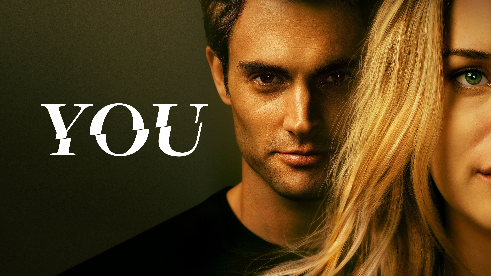
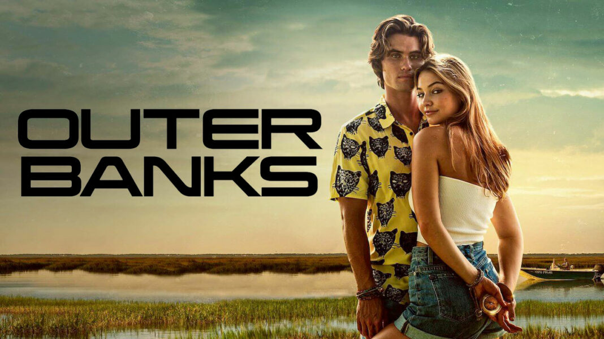
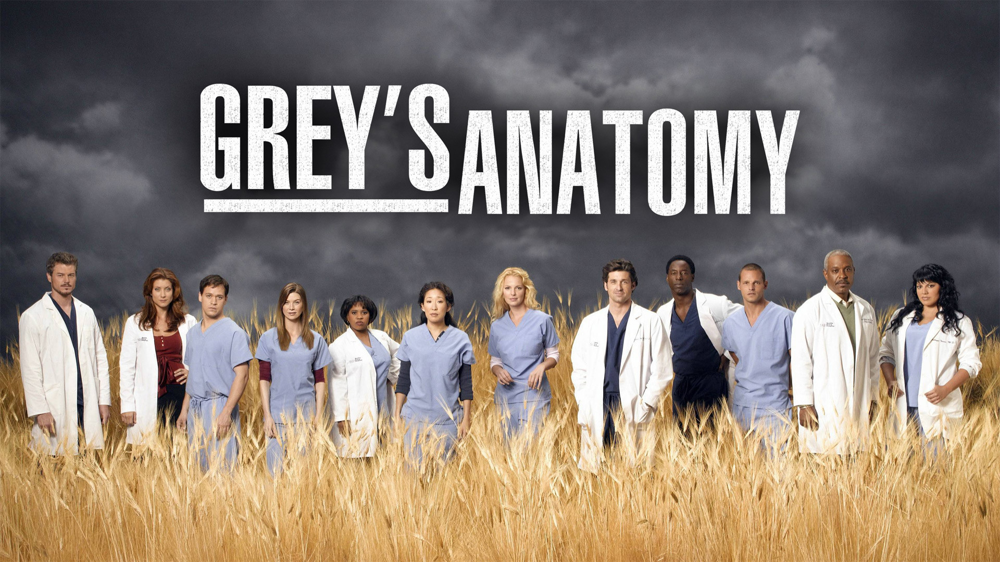
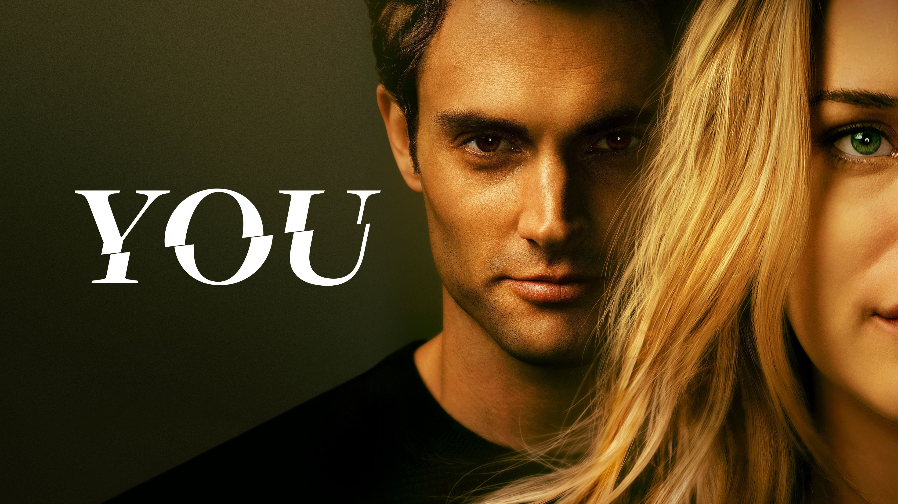
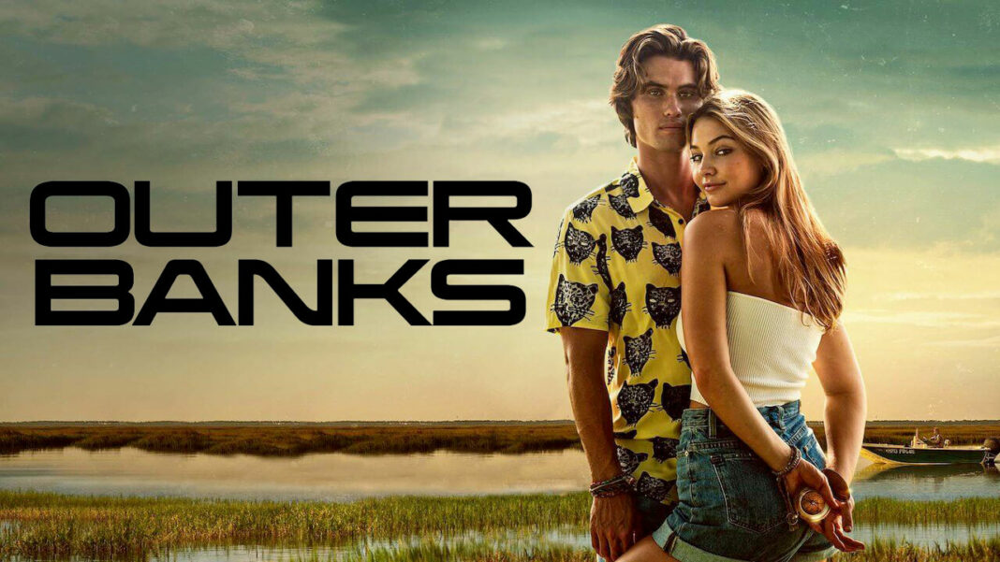
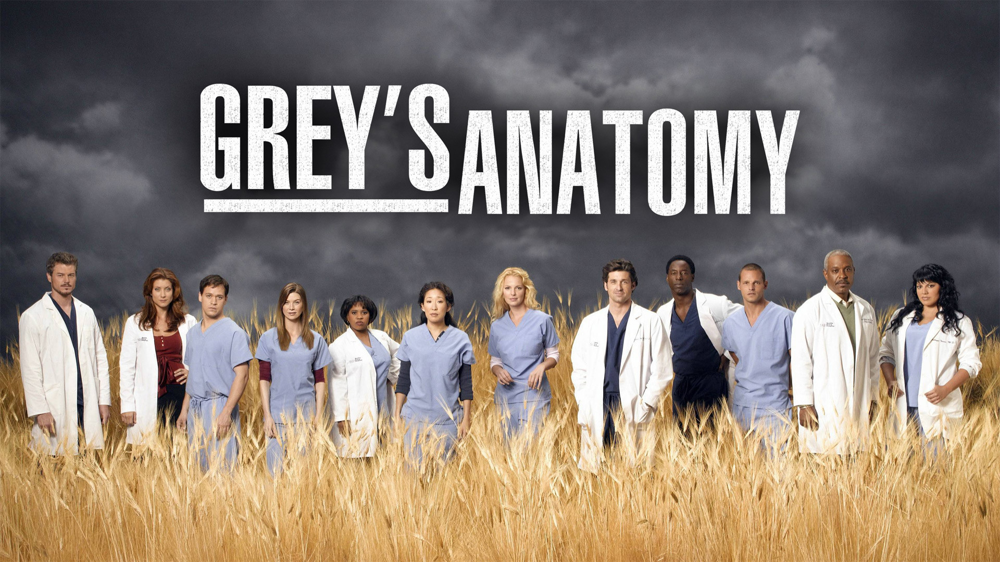

Nova Temporada de "Mistérios Sombrios" Promete Revelações Chocantes: A aguardada quinta temporada da série de suspense "Mistérios Sombrios" está prestes a estrear, e os fãs podem esperar por reviravoltas impressionantes e revelações chocantes que mudarão completamente o rumo da trama. Prepare-se para ficar à beira do sofá!
Spin-off de "Astronautas do Futuro" em Desenvolvimento: Os produtores de sucesso da série de ficção científica "Astronautas do Futuro" anunciaram que estão trabalhando em um emocionante spin-off que se passará em uma colônia espacial no século XXII. Os fãs podem esperar por uma exploração ainda mais profunda do universo futurista da série original.
"Códigos do Passado" Renovada para Três Temporadas Adicionais: A popular série de drama criminal "Códigos do Passado" foi renovada para mais três temporadas, garantindo aos espectadores mais mistérios intrigantes e investigações emocionantes lideradas pelo carismático detetive interpretado por James Art
Netflix anuncia Parceria com Autor Best-Seller para Adaptar Série de Fantasia Épica: A gigante do streaming fechou um acordo com o renomado autor de fantasia para adaptar sua amada série de livros em uma superprodução de TV. Os fãs podem esperar por batalhas épicas, magia deslumbrante e um elenco de primeira linha.